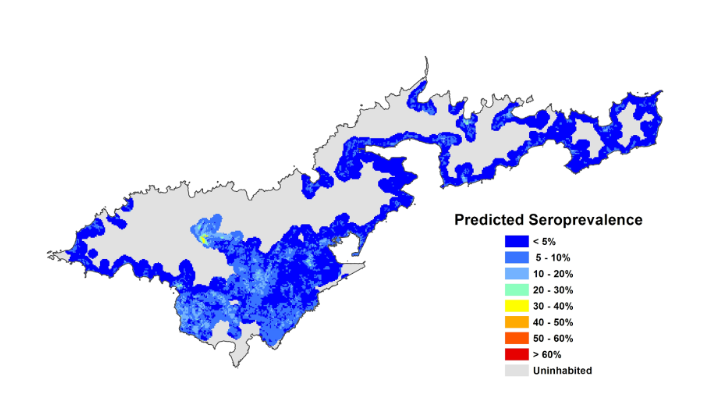
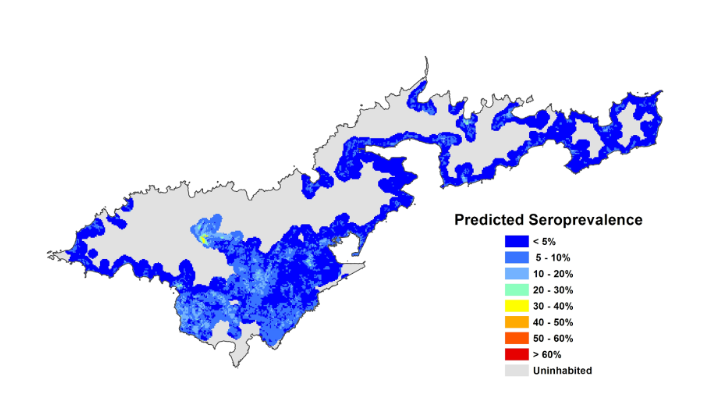

A common problem a computer scientist has to deal with is the storage, compilation, and processing of huge datasets. Ecologists frequently collect data out in the field about organisms and the environment. To draw conclusions about the data, they need a way to visualize the data and search for patterns in it. The computer scientist can help with this, by developing a program to process and visualize data provided by the ecologist.
 

An ecologist searches for a problem in the environment. They take a survey on the quality of a stream before and after deforestation. They do multiple tests such as a salinity test, phosphorus test, etc. The ecologist returns the data to the computer scientist. The computer scientist then develops a program to process all of the data. Once complete, the data is entered in and together the ecologist and computer scientist are able to identify a trend between deforetation and stream quality using the data visually displayed through the computer program. From there, the ecologist can draw conclusions and do further research into the issue.